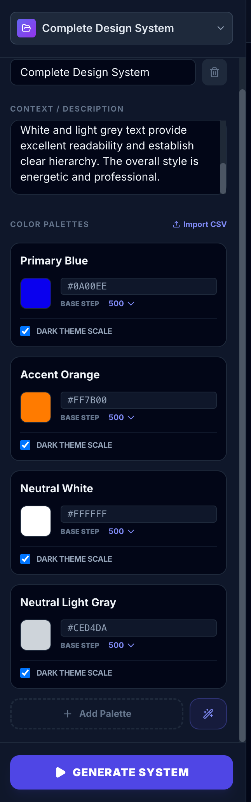

AI workflow design
Designed a guided workflow that turns brand inputs, URLs, or screenshots into usable system foundations.
AI Product | DesignOps platform
An AI-powered DesignOps platform that generates color foundations, validates accessibility, creates design tokens, audits existing systems, and produces implementation-ready documentation.
Case Study Highlights
Designed a guided workflow that turns brand inputs, URLs, or screenshots into usable system foundations.
Structured the product around foundations, semantic tokens, component tokens, documentation, audits, and exports.
Integrated WCAG, APCA, contrast ratios, readability checks, and risky-pairing warnings before implementation.
Produced JSON, CSS, Tailwind, and Design.md outputs to reduce friction between designers and engineers.
Overview
ChromaOps is an AI-powered DesignOps platform built to simplify and automate one of the most repetitive and time-consuming parts of Design System creation.
The platform helps designers transform a brand color, website, existing Design System, product screenshot, or visual reference into a complete Design System color foundation.
Core Output

The workspace gives teams a place to manage separate brands, projects, and Design System foundations.

Users start with a clear setup flow before moving into AI-assisted generation.

The workflow supports a simple brand color or more detailed primary, neutral, and semantic inputs.
The Problem
Building a professional color foundation typically requires multiple tools, manual accessibility testing, token creation, documentation writing, and developer handoff preparation.
These activities can consume days or weeks before a Design System can be adopted by a product team, and the larger the ecosystem becomes, the harder it is to maintain consistency.
Manual Workflow Pain Points
Teams manually create color scales, dark mode palettes, and semantic color sets.
Contrast failures are often found after design decisions have already moved into implementation.
Token naming becomes difficult as systems scale into hundreds or thousands of values.
Documentation requires significant maintenance, so teams often avoid updating it.
My Role
I designed and built ChromaOps using Google AI Studio to explore how AI can reduce Design System setup time while maintaining designer control, quality, consistency, and accessibility.
Responsibilities
Research & Discovery
Material Design, Fluent Design System, Carbon Design System, Ant Design, Polaris, Tailwind CSS, Style Dictionary, and Figma Tokens.
Color creation is not the hardest part. Maintaining consistency across products is the bigger operational challenge.
Color scales, accessibility rules, naming conventions, token hierarchies, and documentation templates follow repeatable structures that AI can assist.
Product Architecture
Color Generator, Accessibility Engine, and Semantic Token Engine.
Token Naming Generator, Component Token Generator, and Token Audit System.
Design.md Generator and Design System documentation workflows.
Website Analyzer, Visual Reference Analyzer, and Design Comparison Engine.
JSON Export, CSS Export, Tailwind Export, and implementation-ready handoff outputs.
Key Features
Users can create multiple Design System projects, save progress, manage separate brands, and maintain independent token libraries.
AI generates Primary, Neutral, Success, Warning, Error, and Info families across 25, 50, 100, 200, 300, 400, 500, 600, 700, 800, 900, and 950 scales.
The system generates dark palettes, contrast-adjusted scales, semantic mappings, and dark mode token relationships.
ChromaOps evaluates WCAG compliance, APCA contrast, contrast ratios, readability scores, failed combinations, and risky color pairings.
Generated colors are mapped into feedback, action, surface, background, border, text, and overlay roles for scalable product use.
Dashboard, UI kit, mobile, and website previews show how tokens behave in realistic interfaces instead of isolated swatches.

ChromaOps generates complete production palettes from structured design inputs.

The generated color foundation includes full scales across product-ready color families.

Dark palettes and token relationships are generated alongside light mode foundations.

Contrast and readability issues are surfaced before implementation begins.

Generated colors are converted into product roles such as action, feedback, text, border, and surface.

Enterprise dashboard previews help evaluate hierarchy across KPIs, charts, cards, and tables.

Core controls show how generated tokens behave across buttons, inputs, alerts, and form elements.

Mobile screens make it easier to assess readability and accessibility across compact layouts.

Marketing and website previews help validate color decisions before development starts.
Token Automation
ChromaOps generates naming structures in kebab case, camel case, or snake case for web and mobile platforms. Example outputs include button-primary-bg-default, button-primary-bg-hover, input-border-focus, and card-surface-default.
It also creates component token structures for states including default, hover, active, focus, selected, disabled, error, warning, and success across components such as buttons, inputs, cards, modals, alerts, badges, navigation, accordions, and pagination.

Users can generate consistent naming systems across casing conventions and platform needs.

Component-level tokens are generated across interaction states, reducing repetitive setup work.
Design Token Audit
Teams can import Design Tokens JSON, CSS Variables, or existing token libraries. The platform analyzes accessibility issues, missing scales, duplicate values, naming inconsistencies, and structural problems.
Figma Token Analysis
ChromaOps can normalize token structures, resolve aliases, validate naming, suggest structure improvements, and generate documentation from existing Figma or Tokens Studio systems.

The audit workflow identifies gaps, duplicate values, naming issues, and structural problems.

Existing token libraries can be normalized, validated, and converted into clearer documentation.
Intelligence Tools
Automatically creates design principles, color foundations, accessibility guidance, semantic token definitions, component guidelines, and developer handoff notes.
Extracts colors, typography, radius, shadows, layout patterns, and visual principles from a website URL, then converts them into Design.md, tokens, and Tailwind configurations.
Compares two websites across colors, typography, components, design language, and consistency for audits, benchmarking, and competitor analysis.
Analyzes uploaded screenshots from websites, mobile apps, SaaS products, or design inspiration to generate a unique system foundation inspired by those references.

The platform turns generated foundations into structured documentation for design and engineering teams.

Generated guidance includes principles, usage rules, accessibility notes, token details, and handoff instructions.

Website inputs can be analyzed and transformed into foundations, tokens, and documentation.

Comparison tools support competitive analysis, design audits, and visual language benchmarking.

AI extracts visual tone, palette direction, and style patterns to inspire a new system foundation.
UX Decisions
I used realistic previews because designers make color decisions in product context, not in isolation.
Accessibility is integrated into generation rather than treated as a final validation step.
Every output was designed to reduce friction between design decisions and engineering implementation.
JSON, CSS, Tailwind, and Design.md outputs support different organization workflows and implementation needs.
Design Challenge
If AI generated everything automatically, designers would lose flexibility. If users had to configure everything manually, the product would fail to save time.
The final workflow combined AI generation, manual editing, accessibility validation, live previews, and flexible exports so the experience remained both powerful and controllable.
Outcome & Impact

Teams can move from system decisions into practical implementation outputs.

Generated assets support designer-developer collaboration through ready-to-use files and documentation.
Reflection
ChromaOps started as a simple experiment around AI-generated color systems. As the project evolved, it became clear that the bigger opportunity was not color generation itself, but the entire DesignOps workflow surrounding Design Systems.
This project reinforced my belief that AI should help designers spend less time on repetitive production work and more time solving user problems, improving product experiences, and making strategic decisions.
Contact
Open to Senior Product Designer, UX Designer, and Design System opportunities.